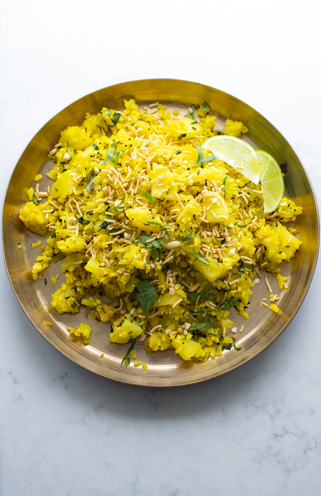
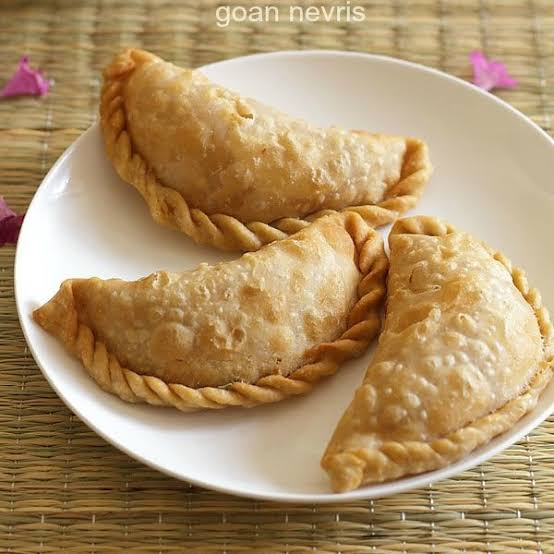
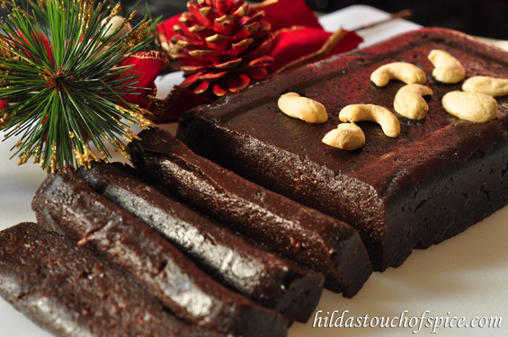
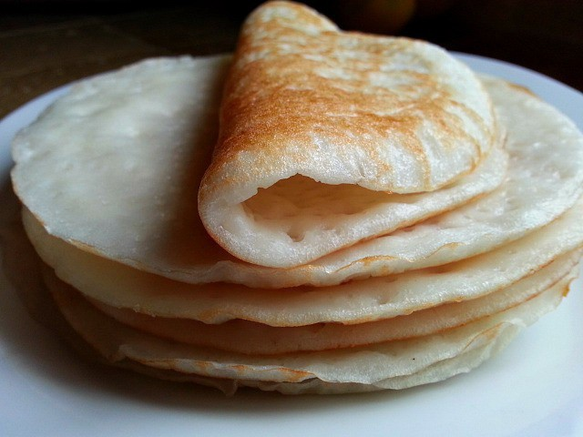

*The dish is believed to have originated in the traditional kitchens of Goan villages, possibly in the Harmal (now Arambol) village in Pernem taluka. Before Portuguese arrival, Goan cooks had already developed a complex spice-making tradition, using local ingredients like coconut, black peppercorns, turmeric, onions, cinnamon, and cloves. The local name for a similar dish is said to be "Shagoti."
* Portuguese Influence: The Portuguese ruled Goa from the 16th century until the mid-20th century, and their presence left a lasting impact on the local cuisine. The name "Xacuti" is thought to be derived from the Portuguese word "chacuti," which referred to a spicy meat curry. The Portuguese introduced new ingredients from the Americas, such as chilies, which became a staple in Goan cooking and gave Xacuti its signature fiery flavor and vibrant color.
* The Fusion of Flavors: Xacuti is the perfect example of this cultural fusion. The intricate blend of toasted and ground spices, a technique rooted in Indian cooking, is combined with Portuguese influences, such as the use of certain ingredients and the general concept of a spicy meat curry. The final dish is a masterpiece that balances the complex, aromatic flavors of roasted spices with the fiery kick of chilies and the creamy richness of roasted coconut.
* A Celebratory Dish: Xacuti is not an everyday meal; it's traditionally considered a festive or special occasion dish. It is often prepared for celebrations and family gatherings, where the elaborate and labor-intensive process of preparing the spice paste from scratch adds to the special nature of the meal.

Chicken Cafreal is a celebrated Goan dish with a fascinating history that reflects the region's colonial past. Its roots are not in India, but in the Portuguese colonies of Africa, most likely Mozambique.
The name "Cafreal" is believed to be derived from the Portuguese term "à Cafreal," which means "in the manner of the Cafres." "Cafre" was a term used to refer to the inhabitants of Cafraria, a region in Southern Africa.
The dish was introduced to Goa by the Portuguese and the African soldiers who served in the Portuguese army. These soldiers, who cooked chicken using local African spices and herbs, brought their culinary traditions to Goa. Over time, the recipe was adapted and fused with local Goan ingredients and techniques, creating the vibrant and flavorful dish we know today.
Key elements of the history of Chicken Cafreal:
* African Origin: The dish's origins are widely traced to Portuguese colonies in Africa, particularly Mozambique.
* Portuguese-Goan Fusion: It was brought to Goa by Portuguese and African soldiers, where it was blended with local spices and cooking methods.
* A Blend of Flavors: The traditional preparation involves marinating whole chicken legs in a paste of green chilies, fresh coriander leaves, onion, garlic, ginger, and other spices, then shallow frying it. This gives it its characteristic green color and fiery, tangy flavor.

the exact origins are debated, many believe that Ros omelette emerged in South Goa, particularly in Margao, in the late 1970s or early 1980s. A person named Ashok Atmaram Naik is often credited with being a pioneer of the dish, starting a stall in Margao around 1978. Another account suggests the late Gajya Shirodkar of "Sujay Graha" in Margao might have been the pioneer in the early 1950s.
* A "Leftover" Invention: A common theory is that the dish was born out of a desire to use leftover curry. Street vendors would have leftover chicken xacuti or other gravies from the previous day. To avoid waste and offer a quick, affordable snack, they began to use this flavorful gravy to moisten and enhance the simple omelettes and bread they were already selling.
* From Pav to Omelette: The initial concept may have involved using the gravy to flavor the pão (Goan bread), which was a popular accompaniment to many dishes. The addition of the omelette on top of the gravy created the now-famous combinationRos omelette is now an integral part of Goa's street food scene. You can find it sold by countless vendors, each with their own secret gravy recipe. While the core components remain the same, there are variations in the "ros," which can be a chicken, chickpea, or even vegetable-based gravy, often with flavors similar to a xacuti or other local curries. It's a testament to Goan culinary resourcefulness and a beloved dish that perfectly captures the essence of a quick, satisfying meal.

Bangdya kadi, or Goan mackerel curry, is a culinary reflection of Goa's coastal heritage and its layered history. The dish's roots are in the traditional Konkani cuisine, where seafood and a coconut base were staples long before foreign influences. The pivotal shift in its flavor profile came with the arrival of the Portuguese in the 16th century, who introduced red chilies from the Americas. This made Goan curries, including bangdya kadi, distinctly spicier and more vibrant.
Mackerel, or bangda, became the ideal fish for this curry due to its abundance in the Arabian Sea, making it an affordable and readily available protein for the local populace. The preparation of the dish varies across Goan communities; Hindu recipes often feature local souring agents like kokum and triphal (a type of Szechuan pepper), while Catholic versions might incorporate a touch of vinegar, reflecting Portuguese traditions. More than just a meal, bangdya kadi is a cultural symbol, representing the fusion of indigenous Konkani, Portuguese, and other influences that have shaped Goan food over centuries. It remains a cherished staple, best enjoyed with steamed rice.

The history of Maankya chili, or Goan squid chili, is a delicious summary of Goan cuisine's evolution. The dish's two main components—squid and chili—tell a story of indigenous tradition meeting foreign influence.
Squid, or maankya, has been a staple in Goa's diet for centuries due to its abundance in the Arabian Sea. The use of this local seafood reflects the region's deep, long-standing connection to the ocean.
The transformative ingredient, however, is the chili pepper. Chilies were not native to India but were introduced by the Portuguese in the 16th century. Before their arrival, black pepper was the primary source of heat in Goan food. The introduction of chilies revolutionized the local spice profile, giving rise to the fiery, vibrant flavors that define Goan cooking today.
The "chili fry" method of preparation, which focuses on bold spice and minimal gravy, is a testament to the creativity of Goan cooks. Unlike traditional curries, this style of cooking allows the distinct taste of the squid and the powerful blend of chili, garlic, and other spices to stand out. While some dishes have centuries-old origins, Maankya chili is a modern classic that has quickly become a beloved street food and restaurant favorite. It perfectly encapsulates how a blend of local ingredients and Portuguese-introduced spices created a unique and enduring Goan dish.

The tradition of eating batata fov (potato flattened rice) during Diwali in Goa is a significant ritual rooted in the story of Lord Krishna's victory over the demon king, Narakasur.
The unique aspect of Diwali in Goa is its focus on Naraka Chaturdashi, the day before the main festival. This day commemorates the triumph of good over evil, embodied by Lord Krishna's defeat of Narakasur. After a fierce battle in the pre-dawn hours, Krishna vanquished the demon king, freeing the people from his tyranny.
Following his victory, Krishna returned home and performed an Abhyangsnan, a ritualistic oil bath, to cleanse himself. This act is the basis for the widespread Goan custom of taking a similar bath on Diwali morning.
After the bath, the first meal of the day is a festive platter of different fov dishes, a custom believed to have been started after Krishna partook in his favorite meal of flattened rice after the battle. Batata fov, a savory and popular preparation with potatoes, is a key part of this platter, enjoyed alongside sweet varieties.
This tradition is not just a meal but a sequence of events that define the Goan Diwali experience: the burning of Narakasur effigies at dawn, the cleansing bath, and finally, the communal feast of fov. It is a celebration of victory, renewal, and the new paddy harvest, with the sharing of the meal strengthening community bonds and a sense of shared heritage.

Nevri, a crescent-shaped sweet pastry, holds a cherished place in Goan households, particularly during the festival of Ganesh Chaturthi. While the iconic modak is widely known as Lord Ganesha's favorite, nevri is an equally important sweet offering in Goan culture. The history of this delicacy during the festival reflects a blend of regional traditions, agricultural cycles, and the deep-seated practice of home-made offerings.
The tradition of making nevri for Ganesh Chaturthi is rooted in the festival's status as a major family and community celebration in Goa. Families, who often travel from across the country and even the globe to be together, begin their festival preparations well in advance. Nevri is a key part of the festive platter, known as vajem, offered to Lord Ganesha as prasad. This sweet is typically deep-fried and filled with a mixture of freshly grated coconut and jaggery, though variations with semolina, gram flour (besan), and dry fruits also exist.
The practice of making nevri is also tied to a broader social and cultural custom. It is often included in the vajem—a large basket of goodies and pooja items—that parents traditionally gift to their newly married daughters and their in-laws. This act solidifies familial bonds and extends the festive spirit beyond the immediate household. The inclusion of nevri in this offering highlights its significance as a symbol of happiness and prosperity. Thus, the history of nevri during Ganesh Chaturthi is not just about a sweet, but a tradition that binds families and communities through celebration and sharing.

Bebinca is a traditional Goan dessert often hailed as the "Queen of Goan desserts" and is a perfect example of the unique culinary fusion that defines Goan food. Its history is steeped in the Portuguese colonial era, blending European baking techniques with local Indian ingredients.
Legend has it that Bebinca was invented in the 17th century by a nun named Sister Bebiana at the Convent of Santa Monica in Old Goa. During this period, a large surplus of egg yolks resulted from using egg whites to starch nuns' habits. To avoid waste, Sister Bebiana is said to have created a layered pudding using these leftover yolks, along with other local ingredients like coconut milk, palm jaggery, and flour. The original recipe reportedly featured seven layers, symbolizing the seven hills of Old Goa and Lisbon.
This labor-intensive dessert, with its meticulously prepared layers, quickly became a staple in Goan Catholic homes. Its preparation, which involves individually baking each thin layer, reflects the patience and care dedicated to special occasions. Bebinca is now a quintessential part of Christmas celebrations and weddings, but is enjoyed year-round by locals and tourists alike.
The dish beautifully represents the blend of cultures in Goa: the use of eggs is a hallmark of Portuguese convent sweets, while the coconut milk and ghee are distinctly Indian. This delicious fusion, combined with its fascinating origin story, has solidified Bebinca's place as a cherished symbol of Goan heritage.

Dodol is a classic Goan sweet that, like many other Goan delicacies, has a history marked by a blend of cultures. While often associated with Goan Christmas celebrations, its origins are a subject of debate, with many historians tracing its roots to Southeast Asia.
The name "Dodol" itself is believed to come from Javanese and Old Javanese words, and the sweet is a popular confection in Indonesia, Malaysia, and Sri Lanka. Some scholars suggest a version of the sweet was served in royal banquets in Indonesia as far back as the 8th to 11th centuries. It is widely believed that the dish was introduced to Goa during the Portuguese colonial era in the 17th century, a time when trade and cultural exchange with other Portuguese-controlled territories were common.
In Goa, dodol became a special preparation, made from a simple yet distinct set of ingredients: rice flour, black palm jaggery, and coconut milk. Its unique firm, jelly-like texture and dark brown color come from a labor-intensive process of slow-cooking the mixture in a large copper pot and stirring it continuously for hours to prevent it from burning.
Dodol holds significant cultural importance in Goan Catholic traditions, particularly during Christmas. It is a quintessential sweet on the festive platter known as consoada, which is shared with relatives and neighbors. The preparation of dodol is often a communal and generational activity, with recipes and techniques passed down through families. It is a symbol of celebration and hospitality, with a history that connects Goa to a wider network of culinary traditions across the globe.

during Dhendlo which is a traditional Goan festival, celebrated primarily by tribal communities, where they worship Lord Krishna as the protector of cows, often on the day after Laxmi Puja, which is Gorvancho Padwo. During the festival, an idol of Lord Krishna, housed in a "Devaro" (a square-shaped box), is carried from house to house, accompanied by singing and music.Daat Pole are thick, soft pancakes made from rice flour. They are a staple in many households and are typically eaten with different types of curries.
The tradition of people gathering with their bhooti (utensils) to eat these pole with prawn curry and other dishes is a beautiful part of Konkani culture. Bhooti refers to the dishes and utensils you carry to eat a meal, and the gathering itself is often called a bhooti, a communal feast where everyone shares a hearty meal together. It's a way of celebrating food and togetherness.The meal of Daat pole is eaten in forest place most likely sitting on a tree branch( mostly chasew tree)The day is ended with preparation of Rice sweet dish उपार which is made from the rice which has been collected from door to door of the villagers.